Online igrači — stvarni emulator
Pregled svih deset tema, 27–28.10.2026, logički prikaz360×780.
Nastavljen prekinuti pregled u stvarnom emulatoru. Green/Light/Medium snimci od27.10. sačuvani kao prethodni dokaz; Winter ponovo otvoren28.10. i dovršen zajedno sa ostalih šest tema.
Svih deset tema ima pregled liste, fokus pretrage, otvorenu tastaturu i filtriranu praznu listu sa/bez tastature. Nađene dve CSS dorade; sprovedene lokalno. Novi PNG crteži i funkcije sobe nisu menjani.
Snimci prikazuju postojeću objavljenu aplikaciju, pre novih lokalnih CSS ispravki. Ni prethodne dorade R07/R12/R14/R15 ni ovaj korak nisu commitovani ili deployovani.
Nalazi
R16 — lokalno ispravljeno; Android potvrda čeka deploy
Native X u pretrazi većine tema ostaje standardno plav umesto identiteta teme.
Pseudo-element search-cancel-button koristi postojeći --theme-room-close-image, koji je već mapiran za svih deset tema. Ostaje native akcija brisanja, bez novog asseta ili menjanja dimenzija kartica i polja.
R17 — lokalno ispravljeno; Android potvrda čeka deploy
Easter legacy blanket pravilo za #online-players-body img dodaje ljubičasti rub avatarima i pravougaonu svetlu senku praznom PNG i drugim slikama.
Uklonjen samo Online Players img selektor iz starog pravila. Postojeći op-available/op-busy/op-playing rubovi zadržavaju status i paletu. Ne menjaju se slike prijatelja ili Settings van ove sobe.
R01-followup — otvorena provera stabilnosti/učitavanja
Prvi Neon izbor28.10. pokazao gate pa vratio Winter; drugi uspeva. Bez merenja hladnog cache-a ili zaključka o tačnom uzroku.
startup-observation — jednokratno zabeleženo; uzrok nepotvrđen
Posle pokretanja emulatora aplikacija se jednom vratila na Android Home. Ponovno pokretanje aplikacije uspelo; crash buffer nije dao zapis. Nije pripisano Online Players funkciji bez dokaza.
Granice
- Nisu slati zahtevi prijateljstva, dueli ili poruke; potvrde tih akcija i ulazak u posmatranje nisu testirani.
- Moon je prikazao samo sopstveni nalog. Drugi igrač i akcione ikone u toj temi nisu potvrđeni novim Android snimkom.
- Duga lista, mrežni kvarovi, generički avatar-fallback, uvećan sistemski font i drugi viewporti nisu novo testirani u emulatoru. Raniji sačuvani rasporedi su zaseban dokaz.
- Intro je korišćen pri ulasku, ali njegovo tačno trajanje i animacija nisu mereni screenshotima. Nema posebnog završnog ekrana ove sobe.
- Ovo nije pregled svih soba aplikacije niti dokaz fizičkog Samsung S25 prikaza. Nove lokalne dorade još zahtevaju naknadnu Android potvrdu.
PASS: deset tema, osam aktivnih PNG uloga po temi, originalni i quality-resolved fajlovi, Green geometrija/fontovi u četiri prethodno sačuvana viewporta. Najmanji kontrast proverenih paletnih parova4,59:1.
Zelena — pregledani raspored i tekst prihvatljivi; tematski search X lokalno dorađen
Naslov, pretraga, kartice, imena i prazno stanje vizuelno odgovaraju Green rasporedu na 360×780; bez odsečenog teksta i izlaska okvira u sistemsku zonu.
Zelena — Lista igrača
2026-10-27. Stvarna lista sa prijavljenim nalogom i drugim igračem; vidljive tematske akcije i njihova dostupnost.
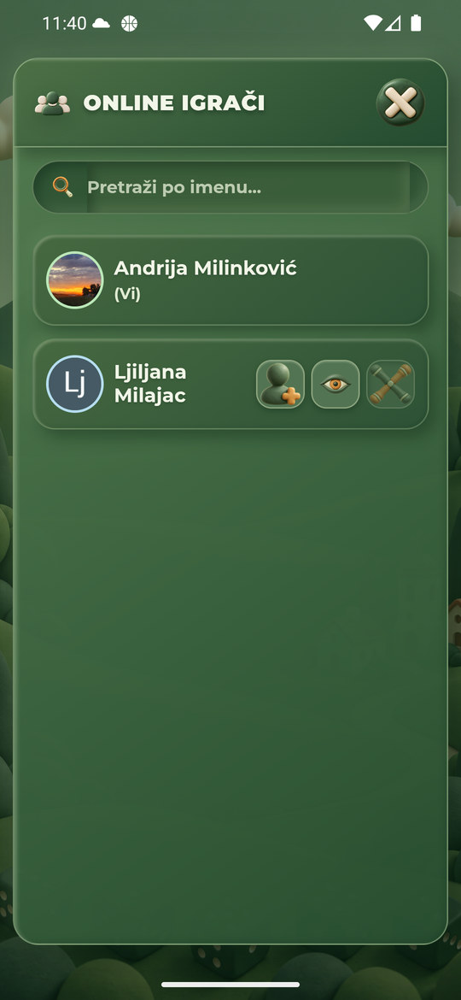
Zelena — Pretraga sa tastaturom
2026-10-27. Polje pretrage ostaje dostupno. Telo liste se prilagođava prostoru iznad tastature.
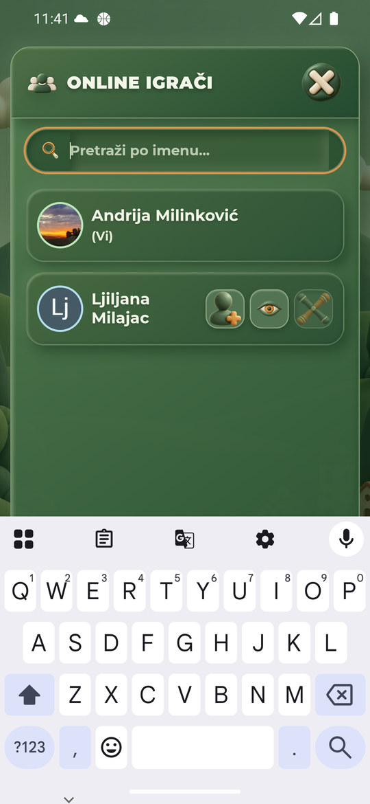
Zelena — Nema rezultata — tastatura
2026-10-27. Lokalni upit zzqa987 pravilno prikazuje tematski PNG i poruku da nema poklapanja.
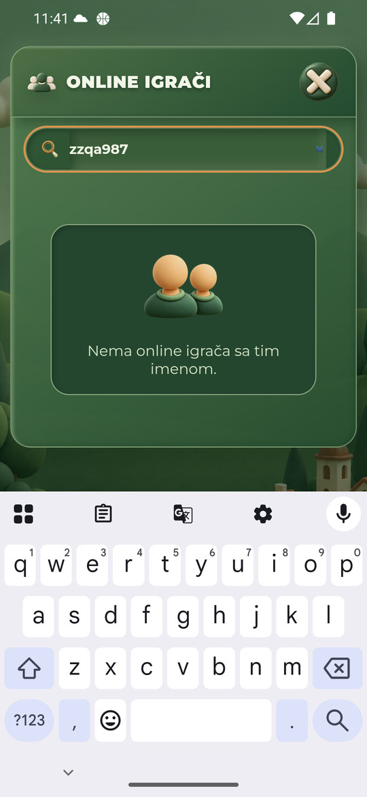
Zelena — Nema rezultata — puna soba
2026-10-27. Prazno stanje bez preklapanja sa sistemskom navigacijom.
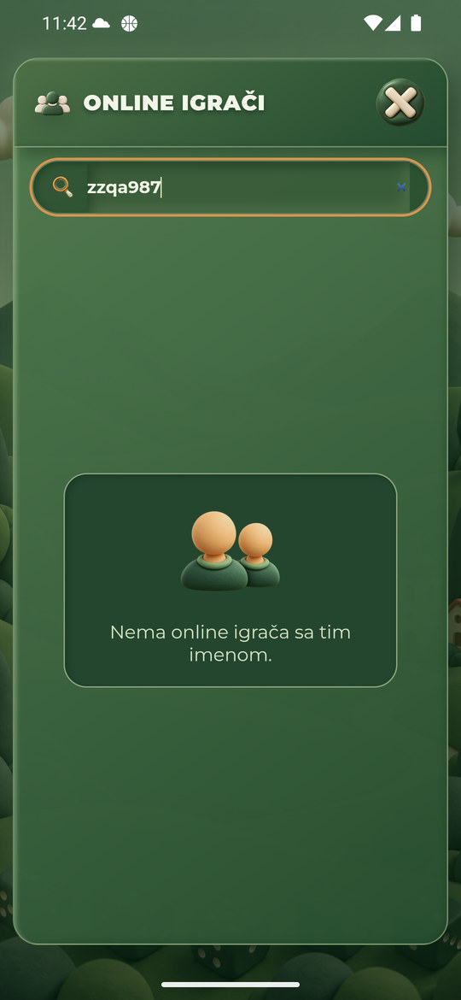
Svetlo zlato — pregledani raspored i tekst prihvatljivi; tematski search X lokalno dorađen
Naslov, pretraga, kartice, imena i prazno stanje vizuelno odgovaraju Green rasporedu na 360×780; bez odsečenog teksta i izlaska okvira u sistemsku zonu.
Svetlo zlato — Lista igrača
2026-10-27. Stvarna lista sa prijavljenim nalogom i drugim igračem; vidljive tematske akcije i njihova dostupnost.
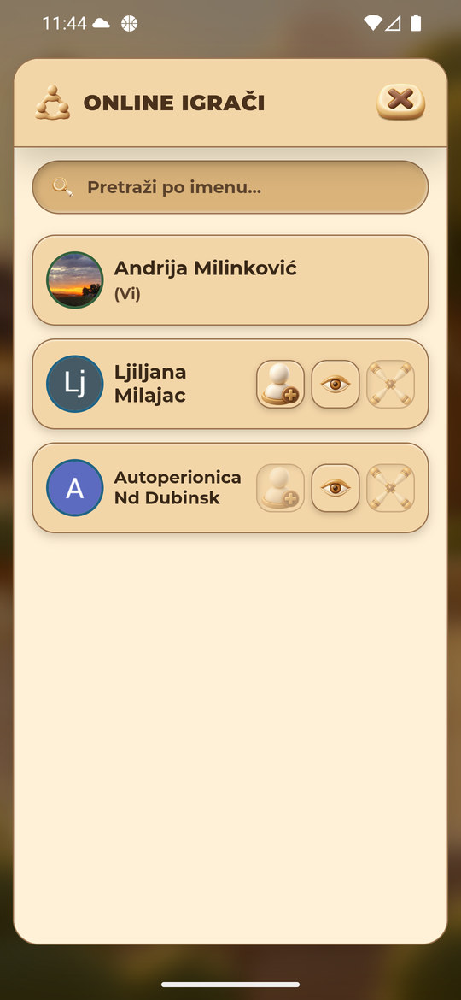
Svetlo zlato — Pretraga sa tastaturom
2026-10-27. Polje pretrage ostaje dostupno. Telo liste se prilagođava prostoru iznad tastature.
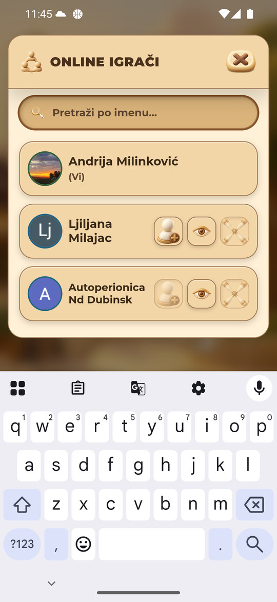
Svetlo zlato — Nema rezultata — tastatura
2026-10-27. Lokalni upit zzqa987 pravilno prikazuje tematski PNG i poruku da nema poklapanja.
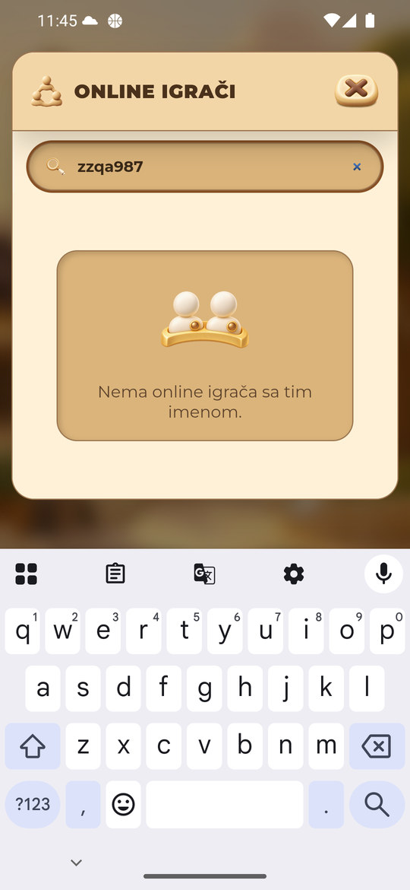
Svetlo zlato — Nema rezultata — puna soba
2026-10-27. Prazno stanje bez preklapanja sa sistemskom navigacijom.
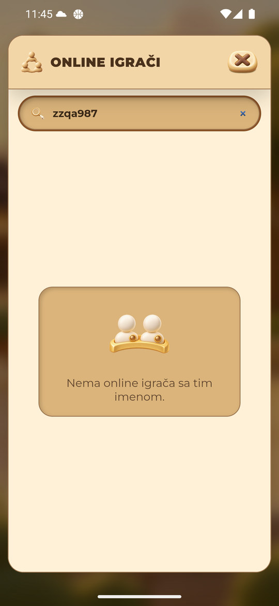
Trula višnja — pregledani raspored i tekst prihvatljivi; tematski search X lokalno dorađen
Naslov, pretraga, kartice, imena i prazno stanje vizuelno odgovaraju Green rasporedu na 360×780; bez odsečenog teksta i izlaska okvira u sistemsku zonu.
Trula višnja — Lista igrača
2026-10-27. Stvarna lista sa prijavljenim nalogom i drugim igračem; vidljive tematske akcije i njihova dostupnost.
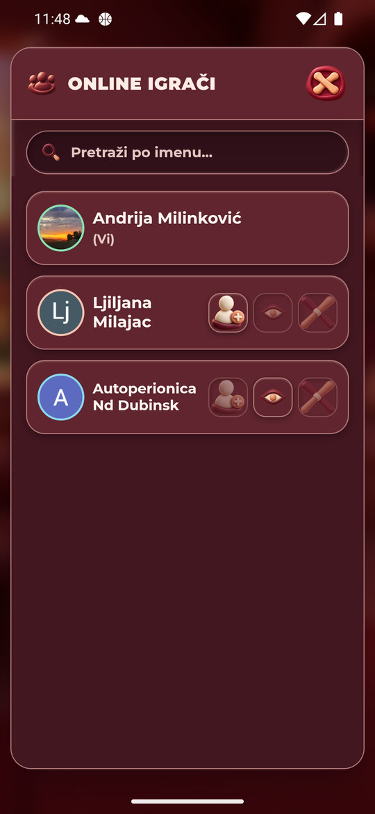
Trula višnja — Pretraga sa tastaturom
2026-10-27. Polje pretrage ostaje dostupno. Telo liste se prilagođava prostoru iznad tastature.
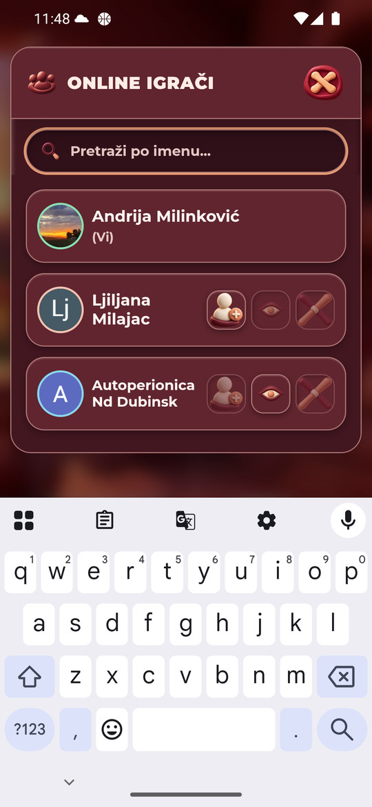
Trula višnja — Nema rezultata — tastatura
2026-10-27. Lokalni upit zzqa987 pravilno prikazuje tematski PNG i poruku da nema poklapanja.
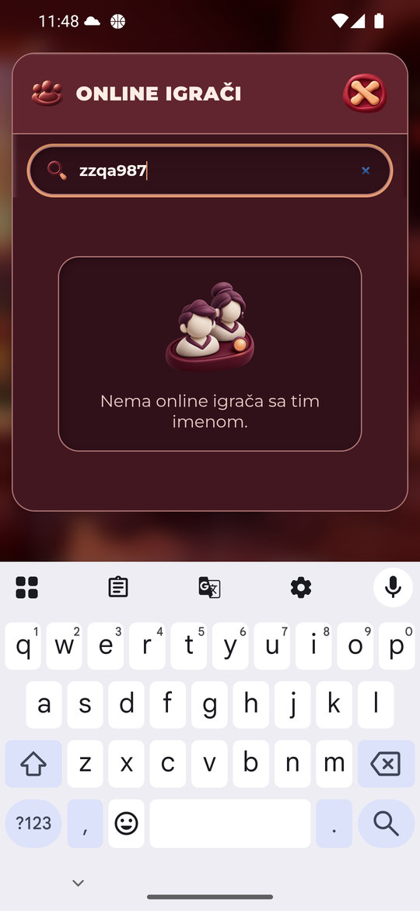
Trula višnja — Nema rezultata — puna soba
2026-10-27. Prazno stanje bez preklapanja sa sistemskom navigacijom.
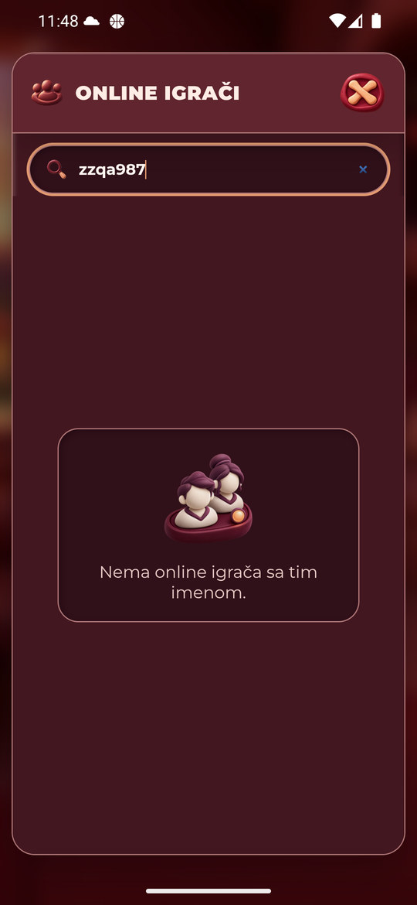
Plavi okean — pregledani raspored i tekst prihvatljivi; tematski search X lokalno dorađen
Naslov, pretraga, kartice, imena i prazno stanje vizuelno odgovaraju Green rasporedu na 360×780; bez odsečenog teksta i izlaska okvira u sistemsku zonu.
Plavi okean — Lista igrača
2026-10-28. Stvarna lista sa prijavljenim nalogom i drugim igračem; vidljive tematske akcije i njihova dostupnost.
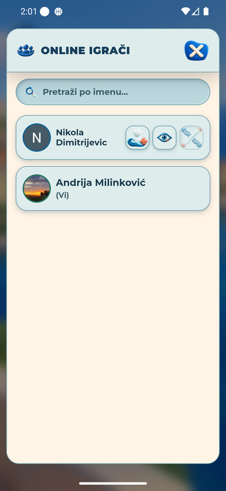
Plavi okean — Pretraga sa tastaturom
2026-10-28. Polje pretrage ostaje dostupno. Telo liste se prilagođava prostoru iznad tastature.
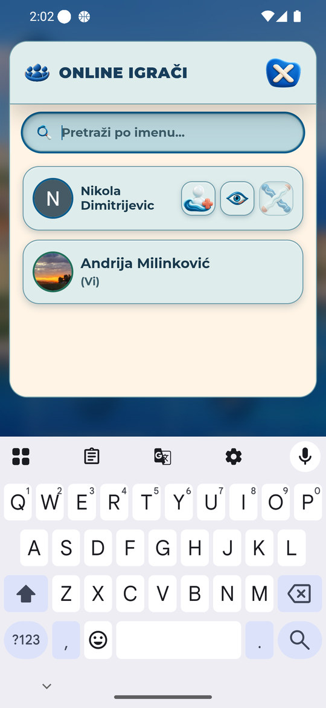
Plavi okean — Nema rezultata — tastatura
2026-10-28. Lokalni upit zzqa987 pravilno prikazuje tematski PNG i poruku da nema poklapanja.
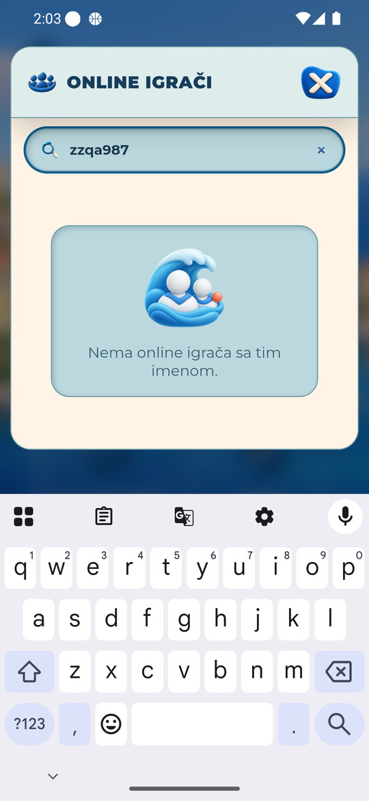
Plavi okean — Nema rezultata — puna soba
2026-10-28. Prazno stanje bez preklapanja sa sistemskom navigacijom.
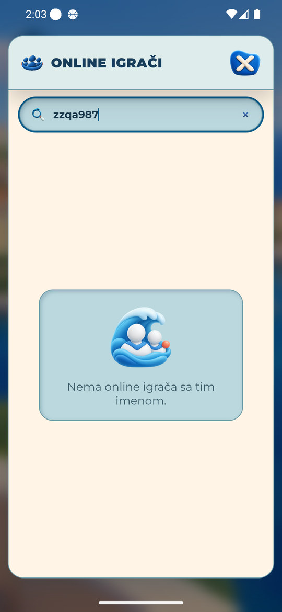
Neon Cyber — pregledani raspored i tekst prihvatljivi; tematski search X lokalno dorađen
Naslov, pretraga, kartice, imena i prazno stanje vizuelno odgovaraju Green rasporedu na 360×780; bez odsečenog teksta i izlaska okvira u sistemsku zonu.
Neon Cyber — Lista igrača
2026-10-28. Stvarna lista sa prijavljenim nalogom i drugim igračem; vidljive tematske akcije i njihova dostupnost.
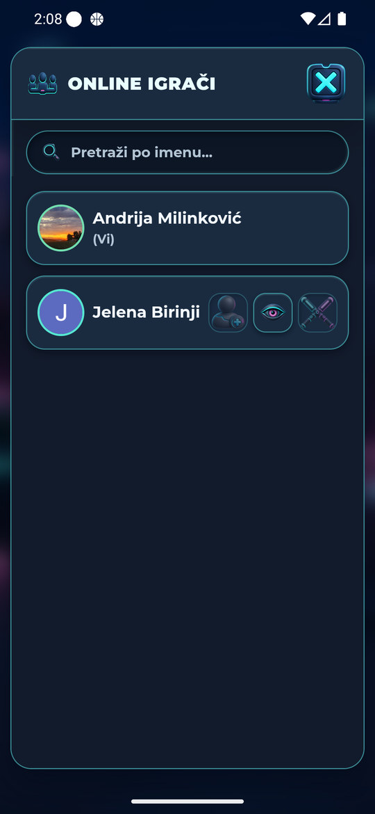
Neon Cyber — Pretraga sa tastaturom
2026-10-28. Polje pretrage ostaje dostupno. Telo liste se prilagođava prostoru iznad tastature.
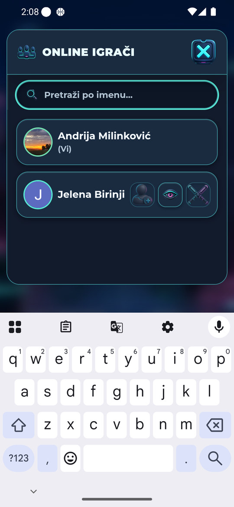
Neon Cyber — Nema rezultata — tastatura
2026-10-28. Lokalni upit zzqa987 pravilno prikazuje tematski PNG i poruku da nema poklapanja.
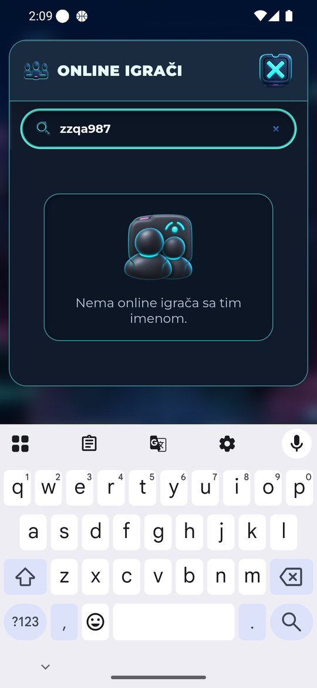
Neon Cyber — Nema rezultata — puna soba
2026-10-28. Prazno stanje bez preklapanja sa sistemskom navigacijom.
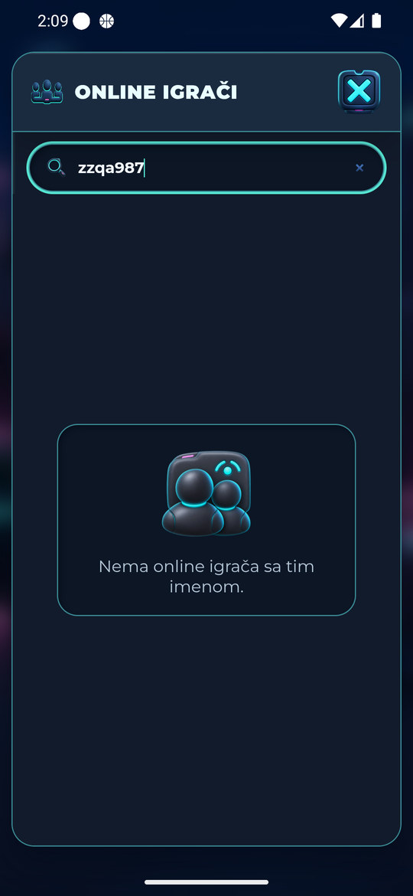
Kraljevski ametist — pregledani raspored i tekst prihvatljivi; tematski search X lokalno dorađen
Naslov, pretraga, kartice, imena i prazno stanje vizuelno odgovaraju Green rasporedu na 360×780; bez odsečenog teksta i izlaska okvira u sistemsku zonu.
Kraljevski ametist — Lista igrača
2026-10-28. Stvarna lista sa prijavljenim nalogom i drugim igračem; vidljive tematske akcije i njihova dostupnost.
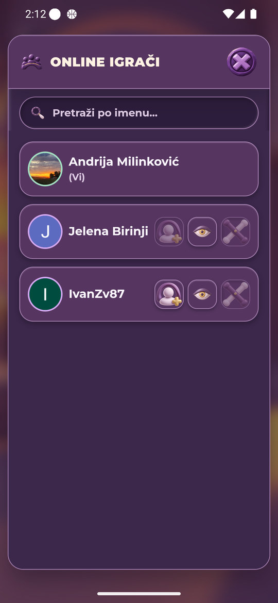
Kraljevski ametist — Pretraga sa tastaturom
2026-10-28. Polje pretrage ostaje dostupno. Telo liste se prilagođava prostoru iznad tastature.
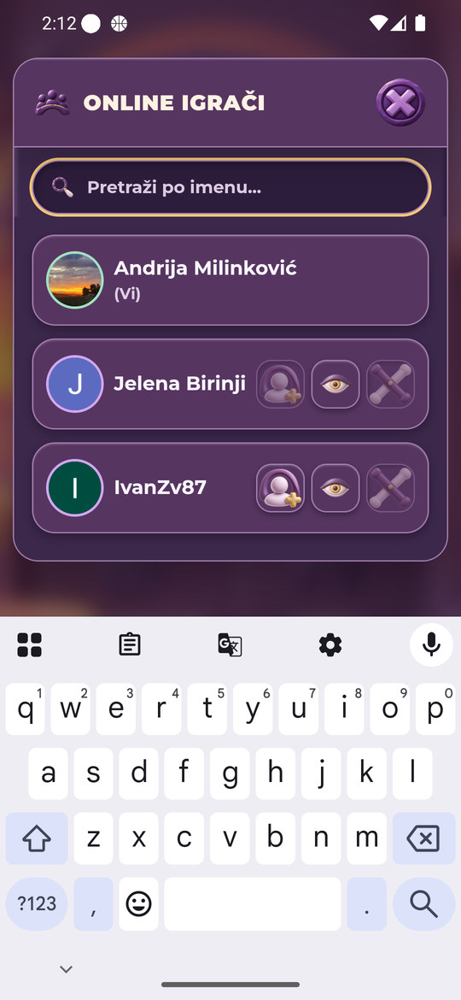
Kraljevski ametist — Nema rezultata — tastatura
2026-10-28. Lokalni upit zzqa987 pravilno prikazuje tematski PNG i poruku da nema poklapanja.
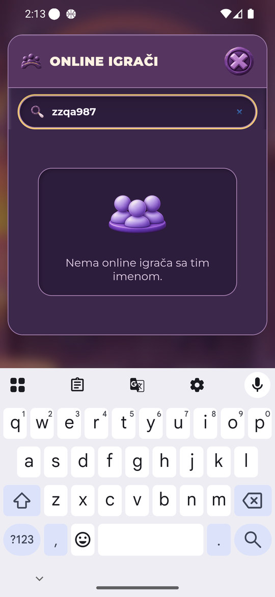
Kraljevski ametist — Nema rezultata — puna soba
2026-10-28. Prazno stanje bez preklapanja sa sistemskom navigacijom.
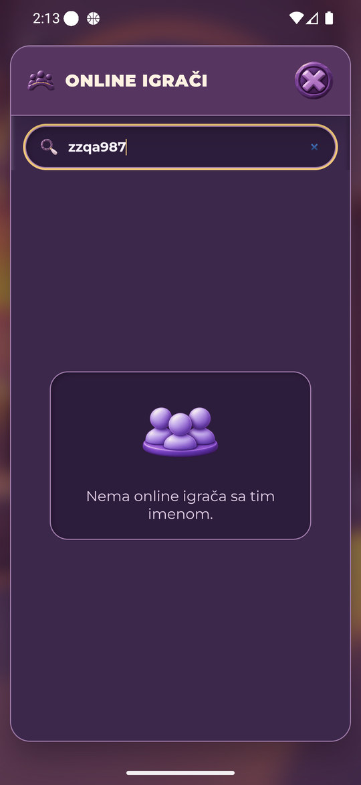
Vaskršnja — potrebna dorada — lokalno ispravljeno, Android potvrda čeka deploy
Naslov, pretraga, kartice, imena i prazno stanje vizuelno odgovaraju Green rasporedu na 360×780; bez odsečenog teksta i izlaska okvira u sistemsku zonu.
Objavljeni CSS daje avatarima stari ljubičasti rub i svim slikama pravougaonu senku. Uklonjeno lokalno iz teme.css; ovi snimci prikazuju problem pre popravke.
Vaskršnja — Lista igrača
2026-10-28. Stvarna lista sa prijavljenim nalogom i drugim igračem; vidljive tematske akcije i njihova dostupnost.
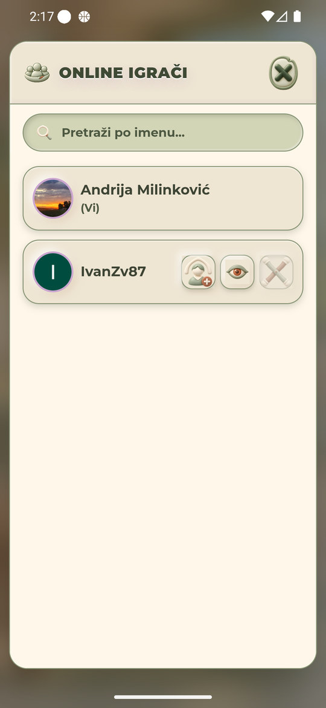
Vaskršnja — Pretraga sa tastaturom
2026-10-28. Polje pretrage ostaje dostupno. Telo liste se prilagođava prostoru iznad tastature.
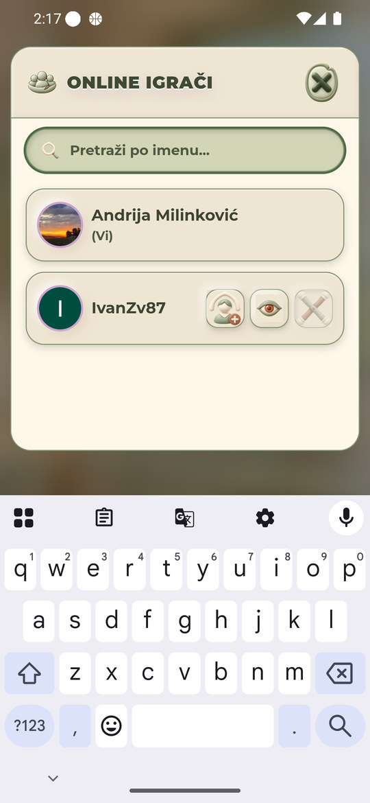
Vaskršnja — Nema rezultata — tastatura
2026-10-28. Lokalni upit zzqa987 pravilno prikazuje tematski PNG i poruku da nema poklapanja.
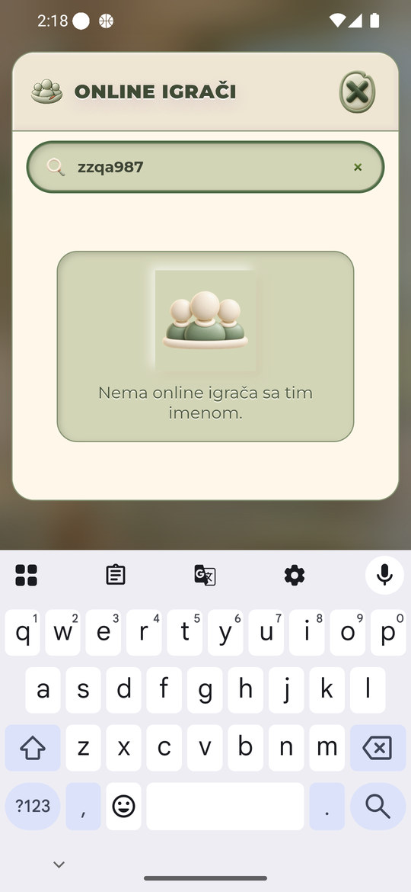
Vaskršnja — Nema rezultata — puna soba
2026-10-28. Prazno stanje bez preklapanja sa sistemskom navigacijom.
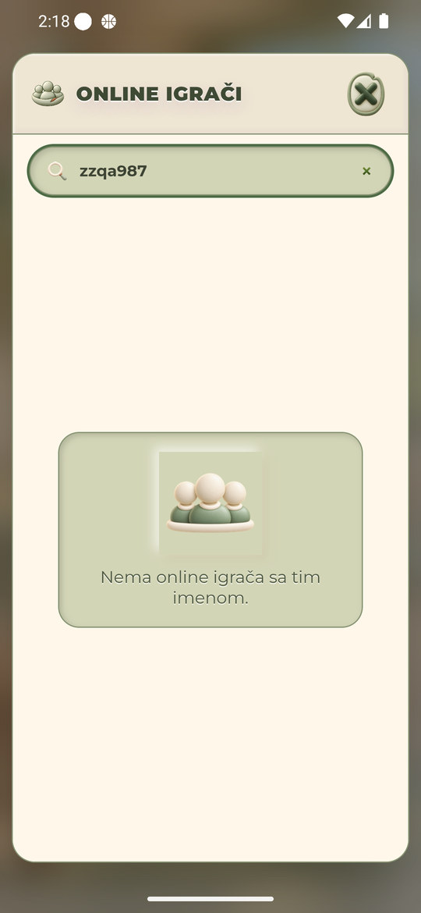
Pustinjsko staklo — pregledani raspored i tekst prihvatljivi; tematski search X lokalno dorađen
Naslov, pretraga, kartice, imena i prazno stanje vizuelno odgovaraju Green rasporedu na 360×780; bez odsečenog teksta i izlaska okvira u sistemsku zonu.
Pustinjsko staklo — Lista igrača
2026-10-28. Stvarna lista sa prijavljenim nalogom i drugim igračem; vidljive tematske akcije i njihova dostupnost.
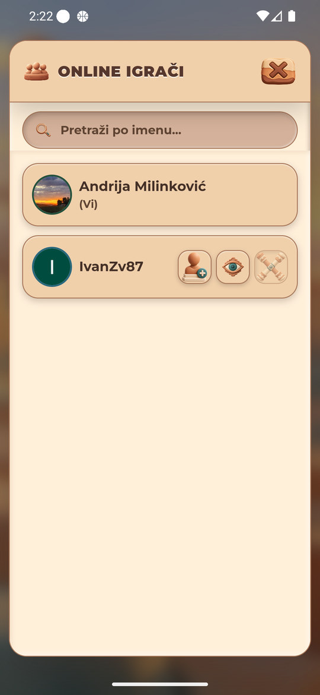
Pustinjsko staklo — Pretraga sa tastaturom
2026-10-28. Polje pretrage ostaje dostupno. Telo liste se prilagođava prostoru iznad tastature.
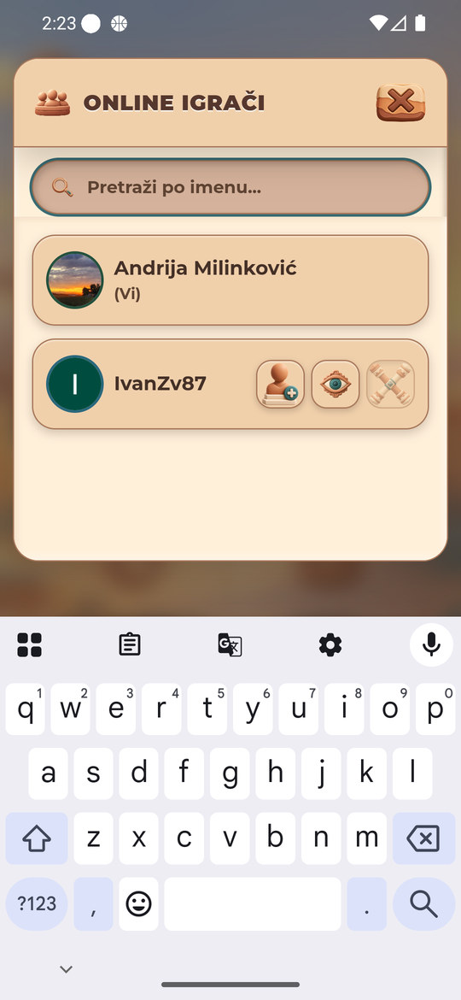
Pustinjsko staklo — Nema rezultata — tastatura
2026-10-28. Lokalni upit zzqa987 pravilno prikazuje tematski PNG i poruku da nema poklapanja.
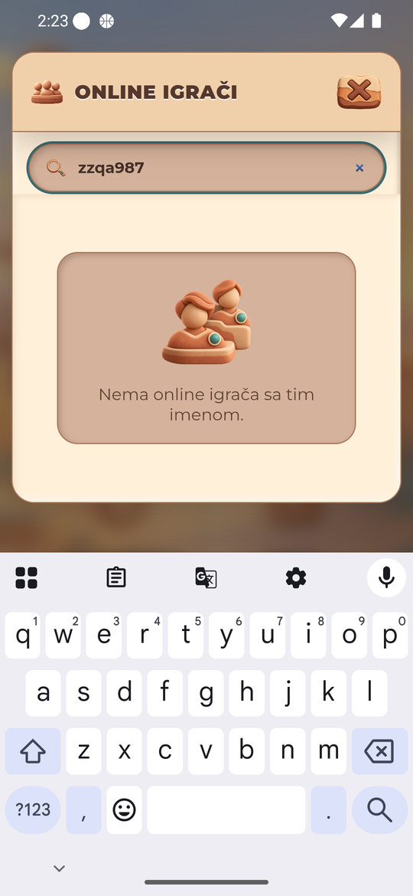
Pustinjsko staklo — Nema rezultata — puna soba
2026-10-28. Prazno stanje bez preklapanja sa sistemskom navigacijom.
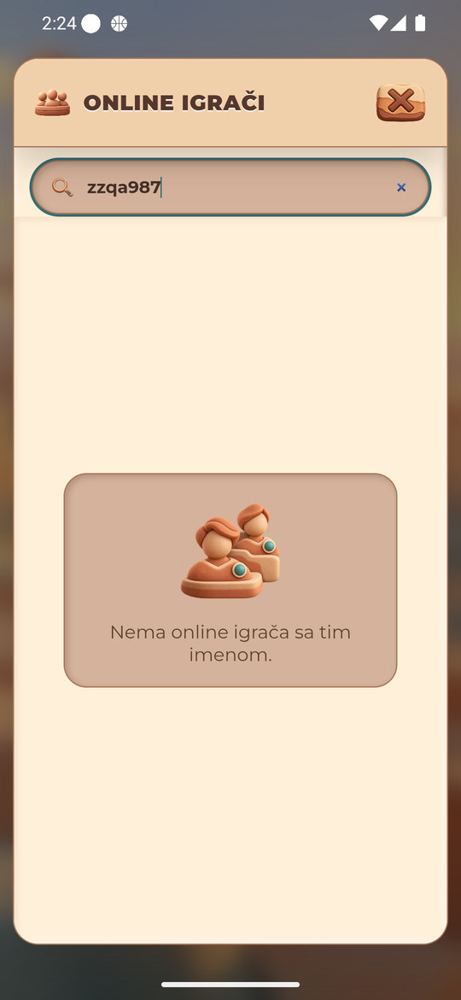
Mesečev sjaj — pregledani raspored i tekst prihvatljivi; tematski search X lokalno dorađen
Naslov, pretraga, kartice, imena i prazno stanje vizuelno odgovaraju Green rasporedu na 360×780; bez odsečenog teksta i izlaska okvira u sistemsku zonu.
Akcije nad drugim igračem nisu stvarno prikazane, jer je lista sadržala samo sopstveni nalog.
Mesečev sjaj — Lista igrača
2026-10-28. U ovom trenutku prisutan je samo prijavljeni nalog; nema dokaza za akcije uz drugog igrača.
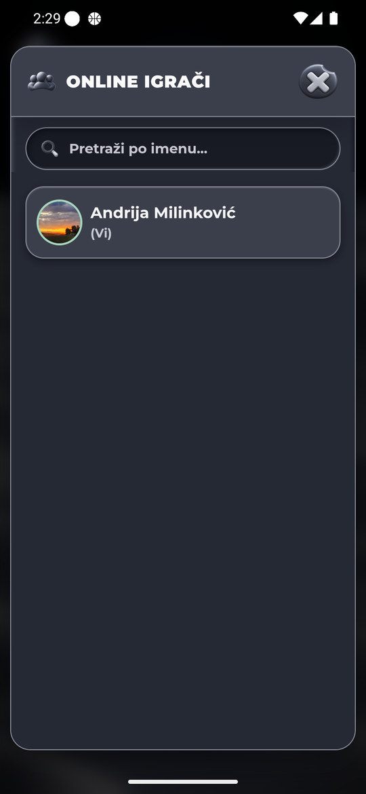
Mesečev sjaj — Pretraga sa tastaturom
2026-10-28. Polje pretrage ostaje dostupno. Telo liste se prilagođava prostoru iznad tastature.
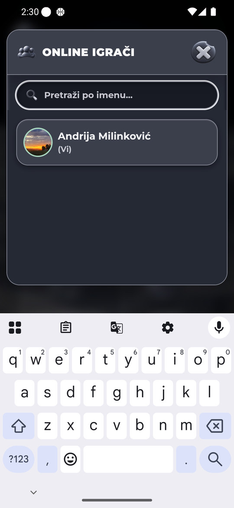
Mesečev sjaj — Nema rezultata — tastatura
2026-10-28. Lokalni upit zzqa987 pravilno prikazuje tematski PNG i poruku da nema poklapanja.
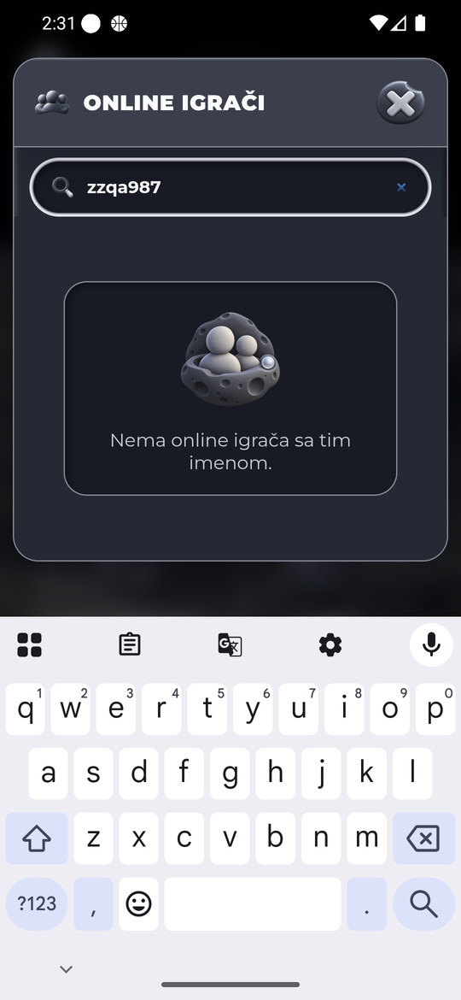
Mesečev sjaj — Nema rezultata — puna soba
2026-10-28. Prazno stanje bez preklapanja sa sistemskom navigacijom.
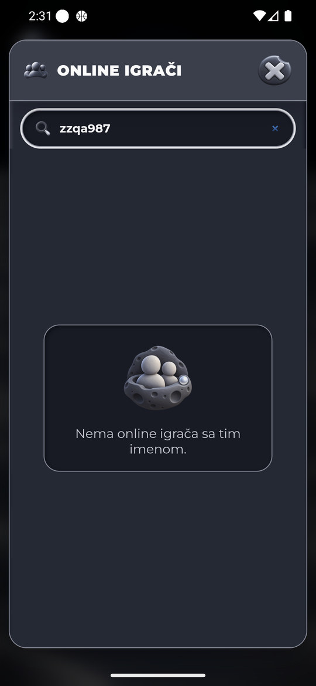
Severna maglina — pregledani raspored i tekst prihvatljivi; tematski search X lokalno dorađen
Naslov, pretraga, kartice, imena i prazno stanje vizuelno odgovaraju Green rasporedu na 360×780; bez odsečenog teksta i izlaska okvira u sistemsku zonu.
Severna maglina — Lista igrača
2026-10-28. Stvarna lista sa prijavljenim nalogom i drugim igračem; vidljive tematske akcije i njihova dostupnost.
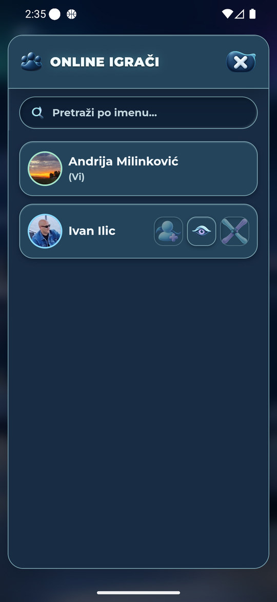
Severna maglina — Pretraga sa tastaturom
2026-10-28. Polje pretrage ostaje dostupno. Telo liste se prilagođava prostoru iznad tastature.
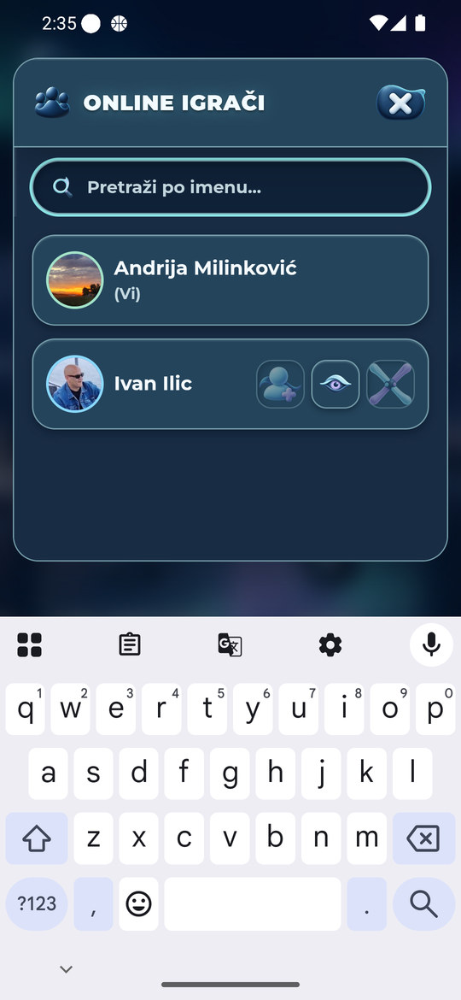
Severna maglina — Nema rezultata — tastatura
2026-10-28. Lokalni upit zzqa987 pravilno prikazuje tematski PNG i poruku da nema poklapanja.
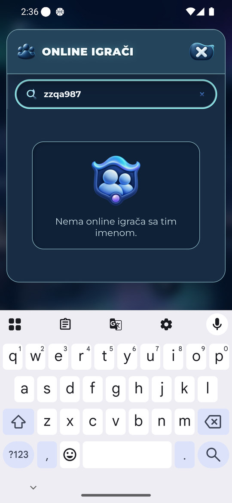
Severna maglina — Nema rezultata — puna soba
2026-10-28. Prazno stanje bez preklapanja sa sistemskom navigacijom.
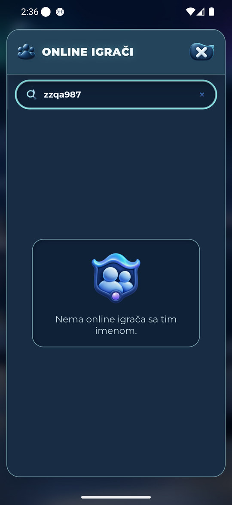
Dodatni dokazi
Neon — prvi pokušaj
2026-10-28. Gate ostaje na prvom snimku; sledeći snimak pokazuje vraćanje na Winter. Ovo je nalaz prelaska teme, ne dokaz greške rasporeda Online sobe.
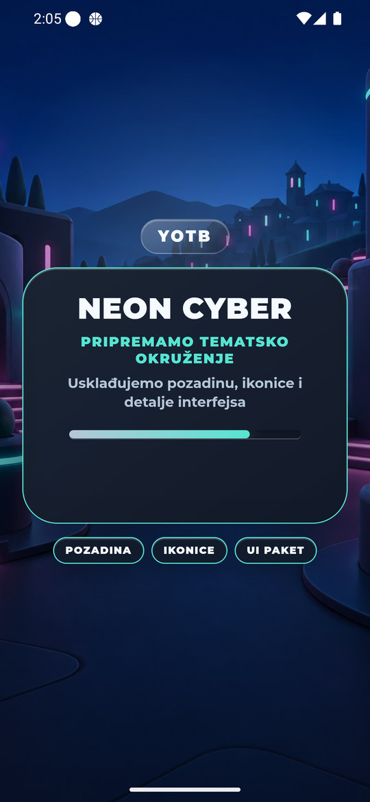
Neon — neuspešan prvi izbor
2026-10-28. Posle gate-a ostao je Plavi okean. Ne proglašavati hladni transfer pouzdano trenutnim.
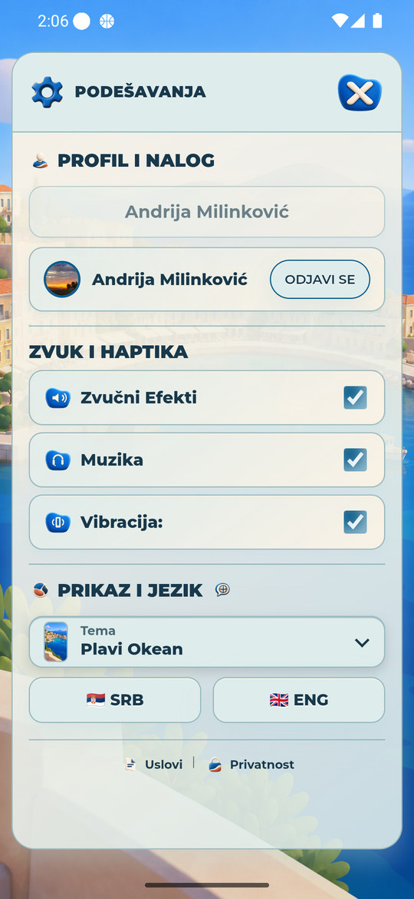
Neon — ponovljeni izbor uspeva
2026-10-28. Nakon ponavljanja aktivan Neon; pregled njegove sobe potom završen.
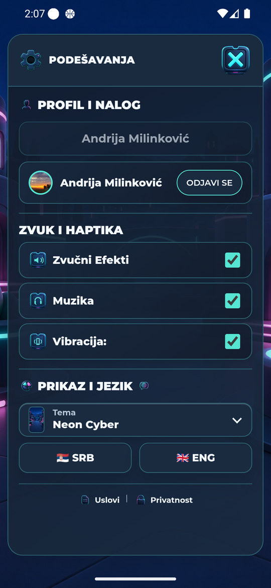
Brisanje pretrage
2026-10-28. Pritiskom na native X upit je obrisan i vraćena lista igrača; ništa nije poslato drugim igračima.
Vraćeno početno okruženje
2026-10-28. Zelena, originalnih 1440×3120 / 560dpi; tastatura zatvorena i show_ime_with_hard_keyboard vraćen na 0. Nalog ostaje prijavljen.
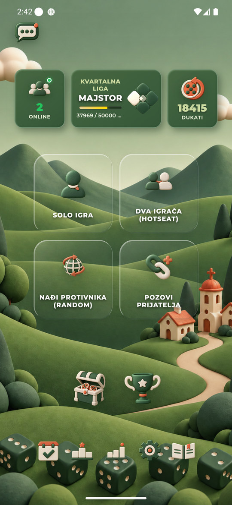
Bez kupovina, nagrada, novih partija, slanja poziva/prijateljstava ili poruka. Upit zzqa987 filtrira već učitanu listu lokalno. Automatski test interstitiali zatvoreni Android back kontrolom. Vidljiv UI i ADB snimci; bez debug porta ili izvlačenja sesije.
Vraćeni Zelena, originalnih1440×3120 /560dpi i show_ime_with_hard_keyboard=0. Emulator otvoren i prijavljen.